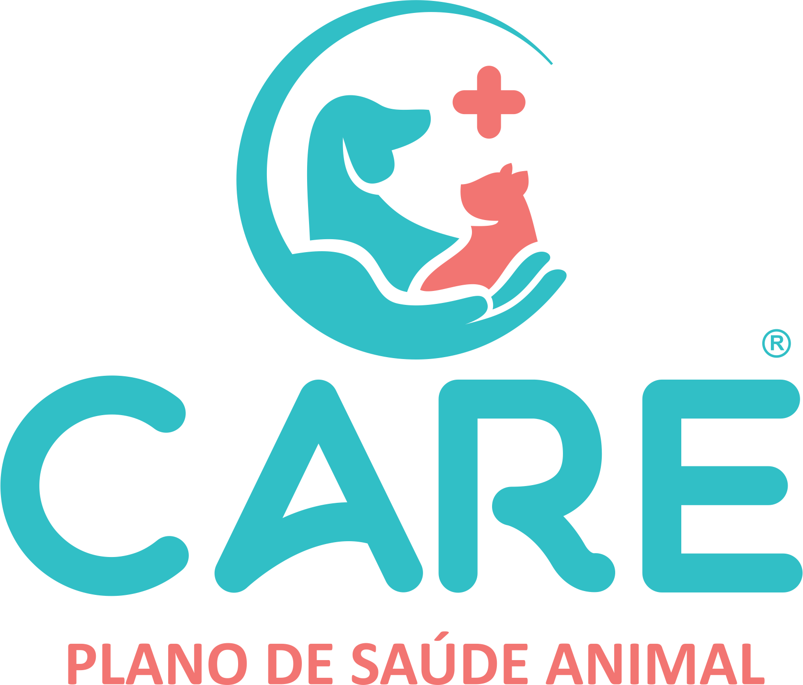
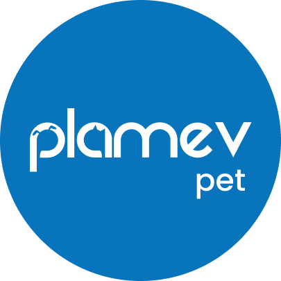

Somos a EcoRad, centro de diagnóstico veterinário, oferecendo sempre o melhor para clientes e parceiros!
Seja um parceiro EcoRad!Na EcoRad, acreditamos que cada detalhe faz a diferença no diagnóstico e no cuidado com a vida. Somos um centro especializado em diagnóstico por imagem veterinária, comprometido em oferecer resultados rápidos, precisos e confiáveis para auxiliar médicos veterinários na tomada de decisão.
Tecnologia avançada e precisão para o diagnóstico do seu pet.


Carregando unidade...